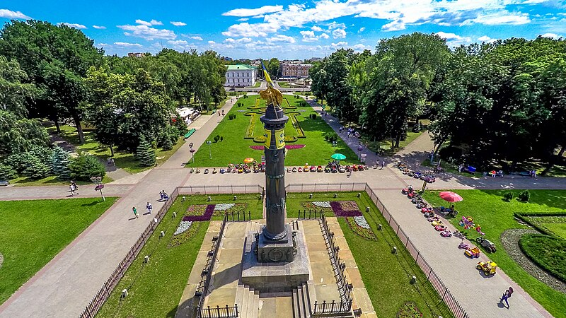
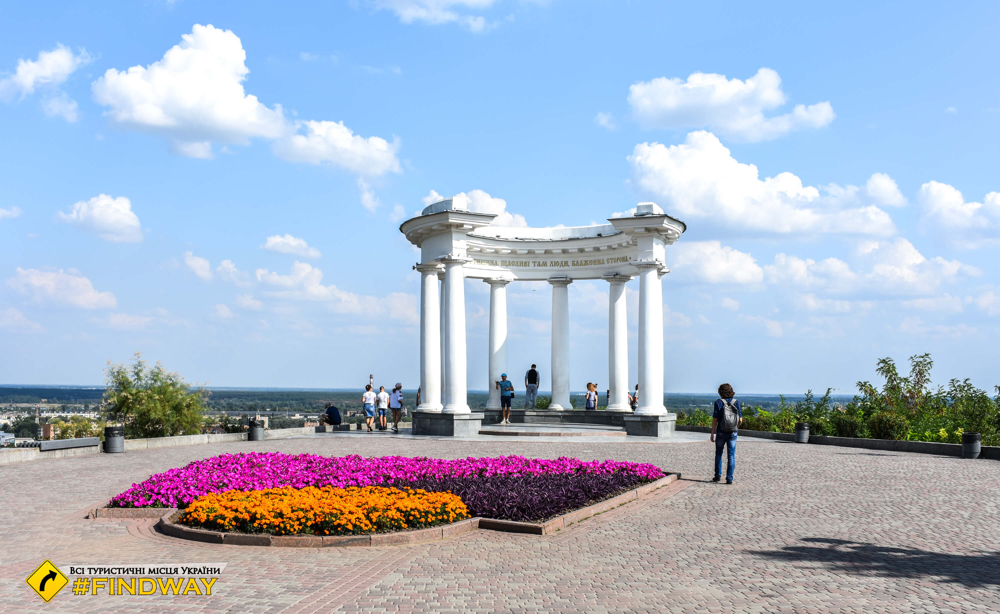
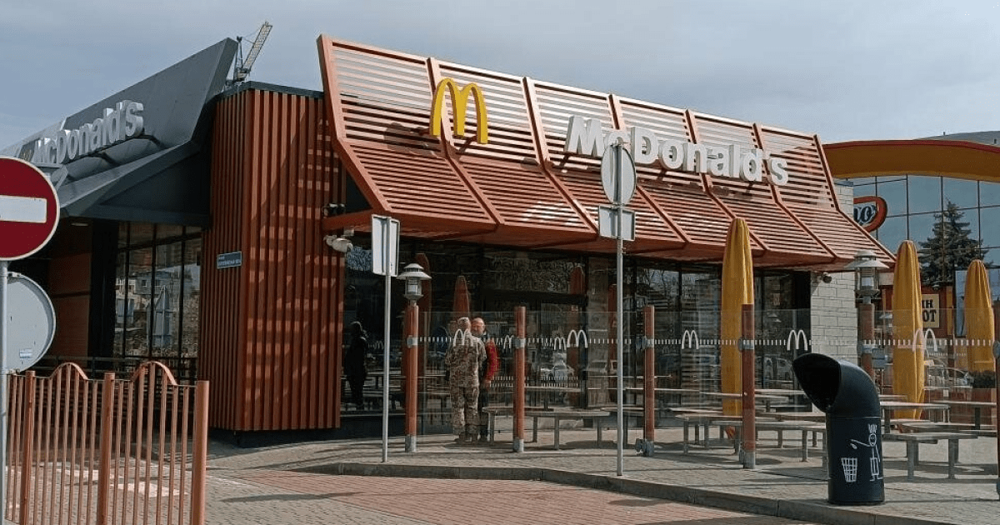

До меню
Моя Батьківщина

Кругла площа — історичний майдан у Полтаві, композиційний центр і символ міста.

Біла альтанка — оригінальна пам'ятка у формі альтанки з колонадою в місті Полтаві.

Відома мережа класичних закладів швидкого харчування, що славиться гамбургерами та картоплею фрі.